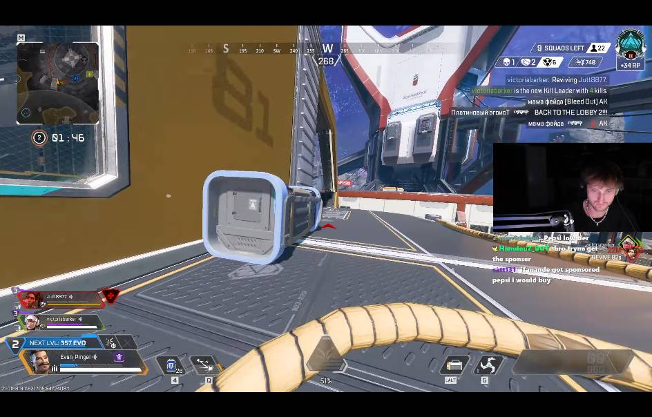

Flat wood, the gold dot square at the top left, and the pin looks the same pinned or not.
Before, then after. Same pop-out, same buttons. Three changes: the lamp glow, no dot square, the pin lies down when pinned.

Flat wood, the gold dot square at the top left, and the pin looks the same pinned or not.
Warm lamp light from the top-left on both wood strips, like the update tray. Dot square gone (drag anywhere on the bar).
The pin lies on its side and turns gold, so you can see at a glance that clicks go through to your game.